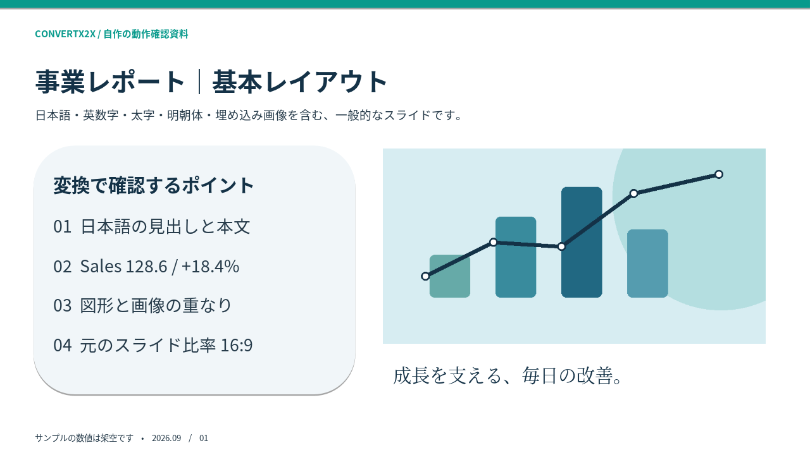
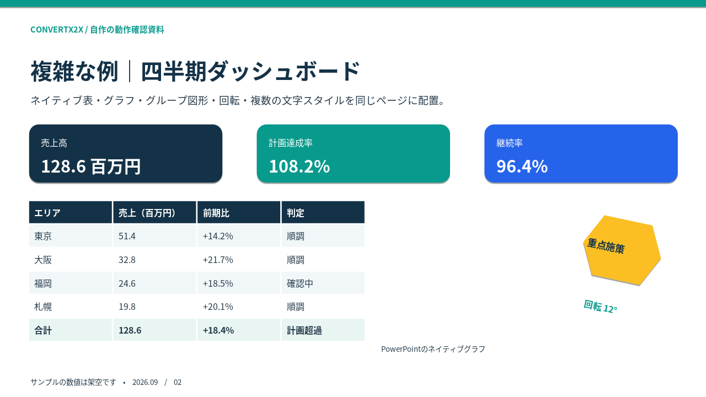
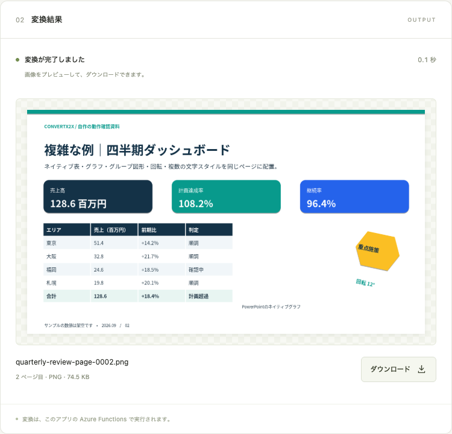
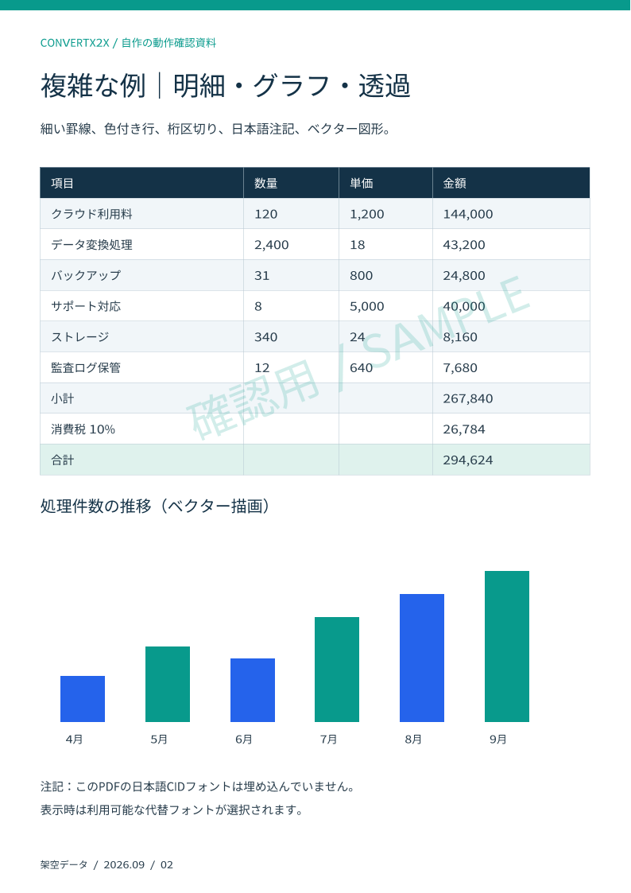
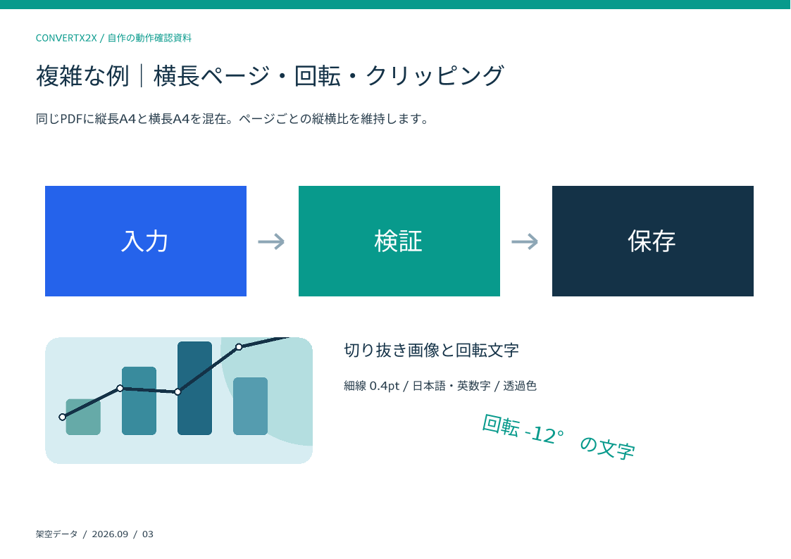
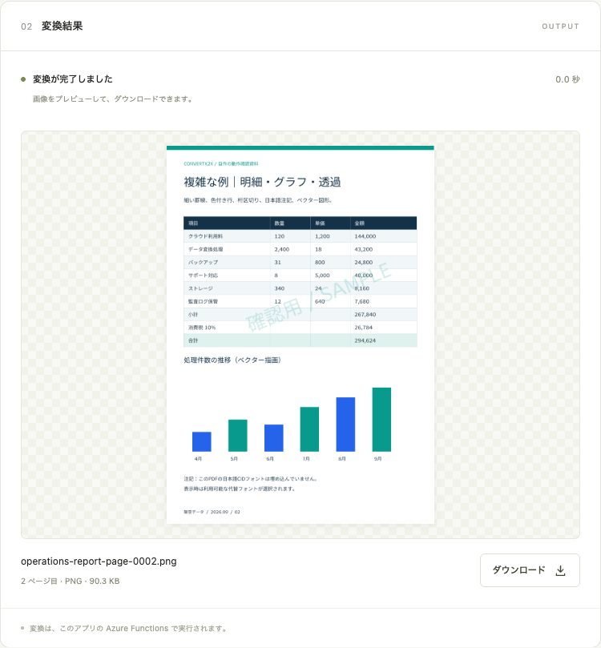

PowerPoint・PDF → 画像 / 実行結果
実際の変換例
自作の日本語資料を、ローカルのAzure Functionsへ実際にPOSTした結果です。基本レイアウトから、表・回転図形・透過・縦横混在のページまで、元ファイルと出力をダウンロードして確認できます。
「API出力」は返されたZIPから取り出した画像そのものです。「スクリーンショット」は、同じ入力をPlaygroundで変換した実画面です。画像をクリックすると原寸で開きます。
PowerPoint：基本スライドと複雑なダッシュボード
16:9・3枚の資料です。1枚目は日本語の見出し・本文・明朝体・埋め込み画像、2枚目は色分けした表・KPIカード・ネイティブグラフ・12度回転したグループ図形、3枚目は業務フローと小さな注記を含みます。
{kind=link}
{kind=link}

{kind=link}

{kind=link}

確認できた制約：このPPTXのネイティブ棒グラフは空白になります。1枚目のように画像として埋め込まれた図表は表示されます。HTTP 200は、すべてのOffice機能の見た目を再現できたことを保証しません。
この変換を再実行する
元ファイルをカレントフォルダに保存し、起動したローカルFunctionsへ送ります。page と width を省略し、全ページ・元の物理寸法を96dpiで変換しています。
curl --fail-with-body \
-H 'Content-Type: application/octet-stream' \
--data-binary @quarterly-review.pptx \
'http://localhost:7071/api/convert?filename=quarterly-review.pptx&format=png' \
--output quarterly-review.zip実レスポンス：200 / application/zip / X-Page-Count: 3。ZIPは202,836 bytesで、page-0001.png ～ page-0003.png を含みます。Azure上ではFunctionキーのヘッダーも必要です。
PDF：明細表・透過・回転・縦横混在
A4縦2ページとA4横1ページを含む3ページのPDFです。日本語の本文、10行の明細表、0.4ptの罫線、透過した斜めの文字、ベクターの棒グラフ、画像の角丸クリッピング、回転文字を組み合わせました。日本語CIDフォントは埋め込んでいない入力です。
{kind=link}
{kind=link}

{kind=link}

{kind=link}

この変換を再実行する
curl --fail-with-body \
-H 'Content-Type: application/octet-stream' \
--data-binary @operations-report.pdf \
'http://localhost:7071/api/convert?filename=operations-report.pdf&format=png' \
--output operations-report.zip実レスポンス：200 / application/zip / X-Page-Count: 3。ZIPは194,916 bytesでした。縦横の違いはページごとに反映され、同じ寸法には引き伸ばされません。
単一ページ：幅1200pxのJPEG
同じPDFの3ページ目だけを、page=3&format=jpeg&width=1200 で変換しました。ZIPではなくJPEGのバイト列が直接返ります。結果は 1200 × 848 px・60,602 bytes、HTTP 200、X-Page-Count: 1、実測 0.038秒でした。
{kind=link}
curl --fail-with-body \
-H 'Content-Type: application/octet-stream' \
--data-binary @operations-report.pdf \
'http://localhost:7071/api/convert?filename=operations-report.pdf&page=3&format=jpeg&width=1200' \
--output operations-report-page-0003.jpeg確認範囲・実行記録
2026年9月16日、macOS arm64・Java 21・Azure Functions Core Tools 4.9.0で実行しました。記載時間は、起動済みのローカルホストに順番に送信した各1回の値で、アップロードと結果の受信を含みます。Azureの4GBプランの速度やコールドスタート時間を示すものではありません。
- 実APIでPPTX・PDFの全ページPNGとPDFの単一JPEGを生成し、HTTPステータス・ページ数・画像寸法・ファイルのSHA-256を記録しています。
- Playgroundでも両形式の2ページ目を実変換し、プレビュー画像がZIP内の画像と同一であることを確認しました。ブラウザのJavaScriptエラーは0件でした。
- 日本語が読めることを出力で確認しています。フォントが未埋め込みのPDFでは、選択される代替フォントが実行環境で変わる場合があります。元のPowerPoint・Acrobatとのピクセル単位の一致や、Azure上での描画結果はこの例では検証していません。
- このページで実行した経路は同期HTTPです。非同期HTTP・直接Queueで使う共通変換処理の出力例として参照できますが、この記録自体はQueue実行の証跡ではありません。
- 入力と図版はこの例のために自作した架空の資料です。生成スクリプトとともに、このリポジトリのMITライセンスで利用できます。
再生成にはPythonの python-pptx・Pillow・reportlab、画面の再撮影にはNode.jsのPlaywrightとChromium系ブラウザが必要です。これらは資料作成用で、API実行環境への追加は不要です。